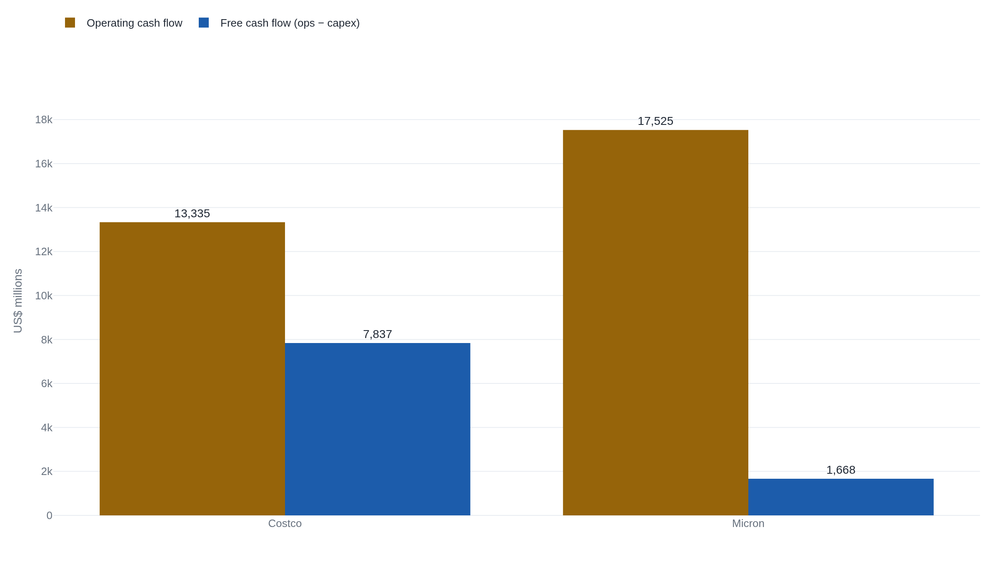

Micron made more operating cash than Costco and left its owner a fifth as much
In fiscal 2025 both companies produced operating cash in the teens of billions, and the capital each poured back into property and equipment left Costco's owner $7.8 billion of free cash against Micron's $1.7 billion.
Why this matters
Free cash flow is the number nearly every valuation eventually rests on: the cash a business can hand its owners after paying for the assets that keep it running. The last lesson reached the cash a company's operations produced; this lesson takes the next step, to free cash flow. Two companies can produce the same operating cash and leave their owners very different amounts, because one spends far more of it on plant and equipment. By the end you will be able to compute free cash flow from any filing's two lines, and to judge when it tells the truth about a business and when a burst of expansion is making it lie.
- 01
- Net income is not the cash a business generates: Lesson 1, which walks Costco's reported profit down to its cash from operations. This lesson starts where that one ended.
- 02
- SEC, Beginners' Guide to Financial Statements: the regulator's plain-language tour of the cash flow statement and its operating, investing, and financing sections.
From operating cash to the cash an owner keeps
Put one question to any business: how much cash could leave it this year without leaving it weaker next year? That cash is what an owner can take out, and it has a name, free cash flow. It is the cash a company's operations produced, less the cash it spent on the long-lived assets those operations need to keep running. In the terms the last lesson set, that is cash from operations minus capital expenditure.
Both terms are familiar. Cash from operations is where the last lesson ended, the cash a company's day-to-day business took in over the year. On Costco's annual report for the year ended August 31, 2025, it came to $13,335 million, and the company spent $5,498 million on property and equipment, its line "Additions to property and equipment." The difference is Costco's free cash flow, $7,837 million.1 The last lesson already reached that $7,837 million; now it has its name.
Capital expenditure sits in the investing section of the cash flow statement, below operating cash and set apart from it.2 Free cash flow itself appears on no statement as a line of its own. A company reports the two pieces, and the reader does the subtraction.2
Set a second company beside it. Micron Technology makes memory chips, and its fiscal year ended August 28, 2025, three days short of Costco's, so the two filings cover the same period. Micron's operations produced more cash than Costco's, $17,525 million. After $15,857 million of capital expenditure, its line "Expenditures for property, plant, and equipment," its free cash flow was $1,668 million.3 Costco kept about 59 cents of every operating dollar. Micron kept under ten.
| Measure | Costco FY2025 | Micron FY2025 |
|---|---|---|
| Net income | 8 099 | 8 539 |
| Depreciation & amort. | 2 426 | 8 352 |
| Cash from operations | 13 335 | 17 525 |
| Capital expenditure | 5 498 | 15 857 |
| Free cash flow | 7 837 | 1 668 |
| Conversion of ops | 59% | 9.5% |

The subtraction is arithmetic. The judgment is in what counts as capital expenditure the business truly needed.
Two kinds of capital spending
Picture two bakeries that sell the same bread and take in the same cash. The first spends $10,000 a year replacing mixers and ovens as they wear out. The second spends that $10,000 on replacements and another $40,000 building a second kitchen it has no need for yet. Subtract every dollar of capital spending, and the second bakery shows almost no free cash flow while the first shows plenty. But the $40,000 bought future capacity: spending the owner chose, not spending the business needed to stand still.
That is the split. Maintenance capital expenditure is the cash a business must spend to keep its current operations running, replacing assets as they wear out. Growth capital expenditure is the cash it spends to get bigger. Free cash flow subtracts both, because both leave the bank. The difficulty is that the split is a judgment, and the filing does not make it for you.
No line on Costco's or Micron's cash flow statement says how much of capital expenditure was replacement and how much was expansion. Companies almost never disclose it.4 The usual workaround treats one year's depreciation as that year's maintenance capital expenditure, on the reasoning that depreciation estimates how much of the existing assets got used up.5 A serviceable first pass, and a biased one. Depreciation is charged on assets' original cost over an assumed life, so it runs below what replacing them actually takes, the more so once prices have risen.5 One study finds the median firm's depreciation running about 25% below its estimated maintenance capital expenditure.4 Read depreciation as maintenance and you get a floor, which makes any figure built on it an upper bound.
Even as a floor it is telling. The cash a company spends above its depreciation is roughly its net new investment, the growth part rather than the replacement.6 Costco spent $5,498 million against $2,426 million of depreciation; Micron spent $15,857 million against $8,352 million.13 Both spend well above the cost of holding their ground, so neither's capital expenditure is all maintenance.
Why Micron keeps so little, and why it is not the fabs
If both firms are investing for growth, why does one keep most of its operating cash and the other almost none? The answer is the size of the spending, not its kind. Costco's $5,498 million of capital expenditure is about 41% of its $13,335 million of operating cash. Micron's $15,857 million is about 90% of its $17,525 million.13 Micron spends nearly every operating dollar on property and equipment, leaving almost nothing as free cash flow.
It is tempting to file Micron's thin free cash flow under capital intensity, the trait of businesses that need a lot of expensive equipment to operate. That reading fails on its own examples. Union Pacific, a railroad, is about as capital-intensive as a public company gets. In fiscal 2024 it produced $9,346 million of operating cash and spent $3,452 million on capital investment, leaving $5,894 million of free cash flow.7 It converted 63% of operating cash to free cash flow, higher than Costco and far higher than Micron. Owning heavy assets did not starve its free cash flow.
What set Micron apart this year was not the fabrication plants it owns but how much it chose to spend building more of them against the cash coming in. A chip maker in a capacity build-out pours cash into new plants, and its free cash flow falls while it does, though much of that spending is optional. The low number is real, but it marks a decision to expand, not a business that cannot generate cash for its owner.
Owner earnings: the number free cash flow is reaching for
Free cash flow answers the owner's question arithmetically, but for a company in mid-expansion it answers a slightly wrong one. It reports the cash left after all capital spending, when the owner wants the cash the business could hand over if it stopped growing. Warren Buffett named that quantity in 1986: owner earnings.8
"These represent (a) reported earnings plus (b) depreciation, depletion, amortization, and certain other non-cash charges ... less (c) the average annual amount of capitalized expenditures for plant and equipment, etc. that the business requires to fully maintain its long-term competitive position and its unit volume."8 Warren Buffett, Berkshire Hathaway 1986 Chairman's Letter
In plain terms, owner earnings is reported profit, plus the non-cash charges like depreciation that lowered profit without spending cash, minus only the maintenance capital expenditure the business needs to hold its position and its size.8 It is free cash flow with the growth spending added back, and it retires a folk shortcut worth naming: that adding depreciation back to profit gives you the cash a business throws off. It does not, because that move stops before subtracting the capital the business must keep spending, which is Buffett's term (c). His own caution is that this maintenance figure "must be a guess," so owner earnings is an estimate wherever free cash flow is a fact.8
Run it on the two companies, taking depreciation as the rough maintenance figure. For Costco, $8,099 million of profit plus $2,426 million of depreciation, less about the same again in maintenance, is roughly $8,099 million, close to its free cash flow of $7,837 million.1 Lift maintenance a quarter, as the study suggests, and it eases to about $7,500 million. For Micron, $8,539 million of profit plus $8,352 million of depreciation, less about the same in maintenance, is roughly $8,539 million, and a quarter more maintenance pulls it toward $6,500 million.34 Either way Micron's owner earnings land around $6.5 to $8.5 billion, several times its free cash flow of $1,668 million. Every figure here rests on that maintenance-capital guess, and none is a reported number.
The gap is the growth spending. For Costco, free cash flow and owner earnings nearly coincide, so the simple number tells the truth about what the owner could take. For Micron, free cash flow understates what the business could pay out if it stopped expanding.
Micron itself shows how movable the number is. Alongside the statement's figures, it reports its own "adjusted free cash flow" of $3.72 billion, built on a lower capital-expenditure figure of $13.80 billion after subtracting government incentives and partner contributions.9 That is more than double the $1,668 million the raw statement implies. Aswath Damodaran calls free cash flow one of the most dangerous terms in finance for this reason, that it can be bent to mean whatever its user wants.6 A reader just has to know which capital-expenditure figure sits under any free cash flow being quoted. Even the friendlier $3.72 billion is less than half of Costco's.
The takeaway
Free cash flow is cash from operations minus capital expenditure: the cash a company could pay out this year without shrinking. No statement reports it as a line; you compute it from two that are. The subtraction carries a judgment, because capital expenditure is two things at once: the maintenance spending a business needs to stand still, and the growth spending it chooses to get bigger. Free cash flow subtracts both. Owner earnings, the figure it reaches for, subtracts only maintenance, which no filing discloses, so any estimate of it rests on a guess that depreciation tends to understate. For a mature company like Costco, free cash flow and owner earnings nearly agree. For a company in a capacity build-out like Micron, free cash flow falls far below what the business could pay out standing still, because of how much it spent this year, not the equipment it owns. Read a low free cash flow as a question about the year's spending before reading it as weakness. This is method, not a recommendation to buy or avoid any company. With free cash flow in hand, the next lesson can turn to what a steady stream of it is worth.
- 01
- Warren Buffett, 1986 Chairman's Letter (owner-earnings appendix): the source of owner earnings, and Buffett's own case for why its key input has to be judged rather than read off a page.
- 02
- Mauboussin & Callahan, Return on Invested Capital: how practitioners handle maintenance capital expenditure and the other adjustments a raw statement leaves to the reader.
Sources
- SEC EDGAR · Costco Wholesale Corp., Form 10-K (FY2025, accession 0000909832-25-000101), Consolidated Statements of Cash Flows
- U.S. Securities and Exchange Commission · Beginners' Guide to Financial Statements
- SEC EDGAR · Micron Technology, Inc., Form 10-K (FY2025, accession 0000723125-25-000028), Consolidated Statements of Cash Flows
- Venkat Peddireddy (Columbia Business School, CEASA) · Estimating Maintenance CapEx
- Michael J. Mauboussin & Dan Callahan (Morgan Stanley Counterpoint Global) · Return on Invested Capital
- Aswath Damodaran (Musings on Markets) · Earnings and Cash Flows: A Primer on Free Cash Flow
- SEC EDGAR · Union Pacific Corp., Form 10-K (FY2024, accession 0000100885-25-000042), Consolidated Statements of Cash Flows
- Warren Buffett (Berkshire Hathaway) · 1986 Chairman's Letter, owner-earnings appendix
- Micron Technology, Inc. · Reports Results for the Fourth Quarter and Full Year of Fiscal 2025